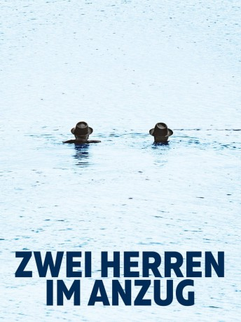

IMDB-Wertung: 5.9 / 10
IMDB-Wertung: 5.9 / 10  Metascore:
Metascore: 
Ein Jahrhundert – Eine Familie – Drei Generationen. Ein Stück bayerische Geschichte.
 IMDB-Wertung: 5.9 / 10 Metascore:
Ein Jahrhundert – Eine Familie – Drei Generationen. Ein Stück bayerische Geschichte.
Jahr: 2018
Dauer: 129 Minuten
FSK: 12
Land: Deutschland Studio: ARTETonspuren:
Untertitel:
Auflösung: 720p (1280x696) Größe: 2672 MB
Genre: Drama
Regisseur: Josef Bierbichler
Drehbuch: Josef Bierbichler
Soundtrack: Kofelgschroa, Timo Kreuser
Darsteller:
Datei: X:\2018(N-Z)\Zwei Herren im Anzug (2018, FSK12, 1280x696).mkv seit 12.01.2020
Festplatte: HD 2018(G-Z)-2019(A-Z)
 Es gibt insgesamt 172 Filme in der Gruppe '2018(N-Z)'
Es gibt insgesamt 172 Filme in der Gruppe '2018(N-Z)'